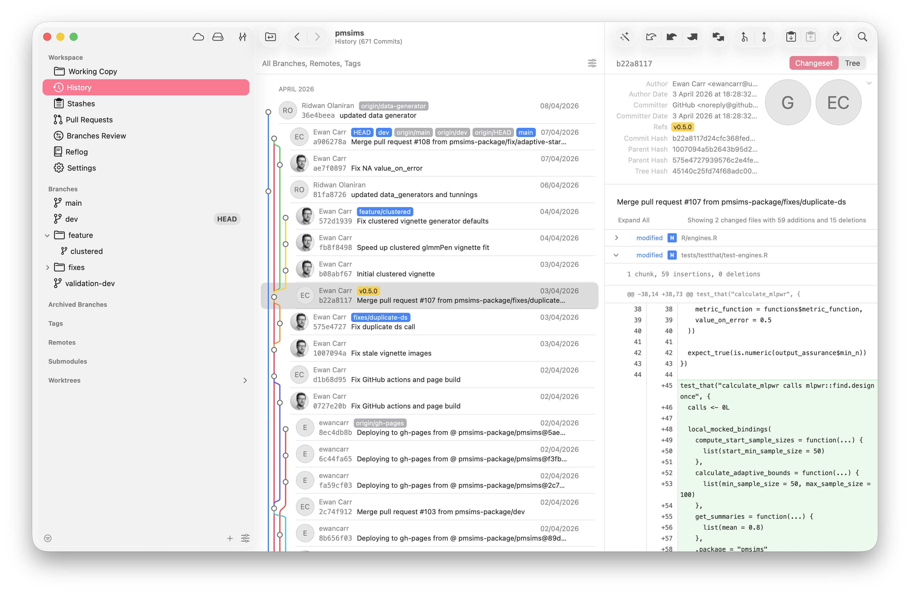
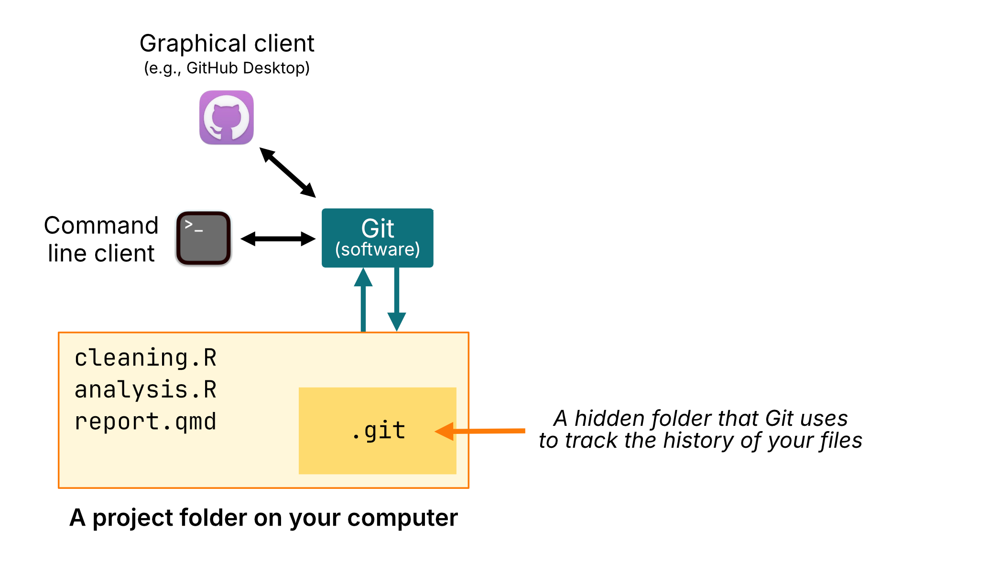
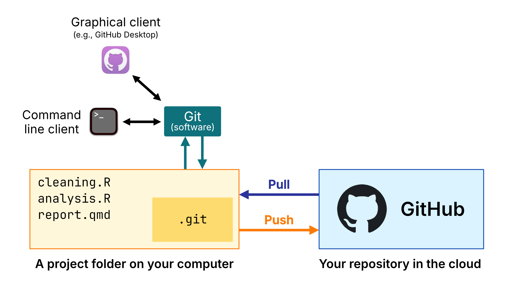
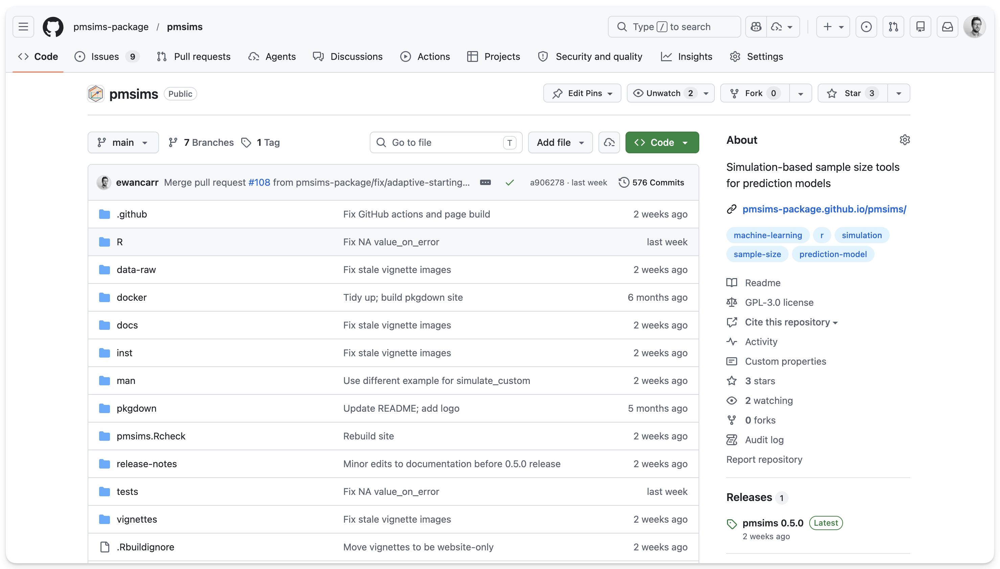
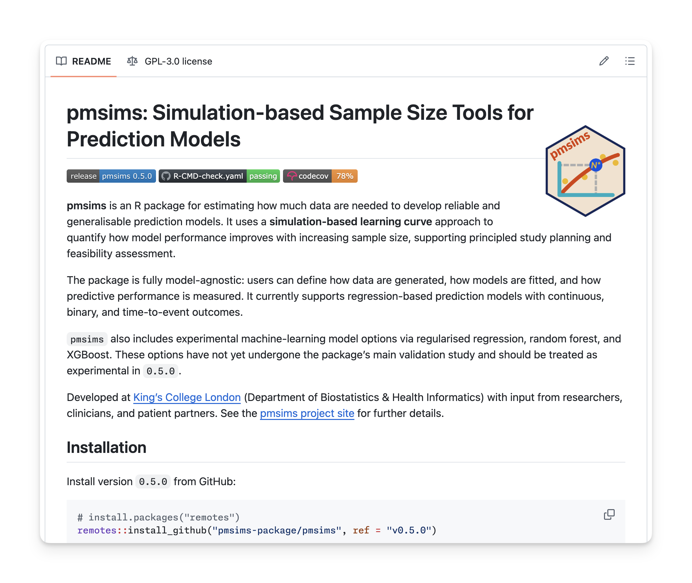
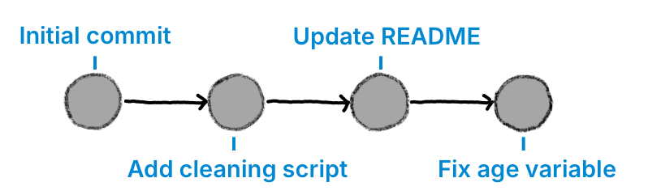
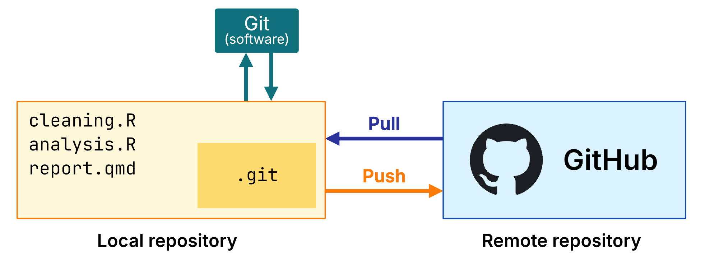

Through a graphical client (e.g., GitHub Desktop, Tower)
Different interfaces, but doing the same thing underneath.

Local vs. remote repositories
Local repository
The working copy on your computer. You can edit files and make commits offline.
Remote repository
A linked copy hosted online (e.g., GitHub), containing the complete history of your repository.
We can send and receive changes from the remote. This is referred to as “pushing” and “pulling”.


Three reasons to use Git
1. Complete history
Every change annotated with a message
Go back to any earlier version
Compare exactly what changed between two points
Remember why you made decisions months later
2. Collaboration
One repository, multiple contributors
Everyone works locally, shares changes via the repository
Git records who changed what, and when
Pull, edit, commit, push
3. Open research
Sits alongside a paper or report
Readers can inspect the files, README, and history
Start private, make public when ready
Funders and journals increasingly expect this


Key concepts
Four key terms
Repository
Your project folder plus its recorded history.
Tracked / untracked
A file is untracked until you tell Git to watch it. After that, Git treats it as tracked.
Staging
Staging means choosing which tracked changes should go into the next commit.
Commit
A commit is a saved snapshot of the staged changes at one point in time.
How Git thinks about your files
A file can sit in your project folder without being part of the repository yet
Git calls that file untracked
When you tell Git to watch it, the file becomes tracked
The hidden .git folder stores the repository history inside the project folder
The workflow
1Initialise repository
2Add files to the repository
3Choose first commit contents
4Make first commit
5Edit a file
6Choose which changes to commit
7Commit again
…Repeat
Step 1
Start the repository
Git creates the hidden .git folder inside your project. Your files stay where they are.
The workflow
1Initialise repository
2Add files to the repository
3Choose first commit contents
4Make first commit
5Edit a file
6Choose which changes to commit
7Commit again
…Repeat
Step 2
Tell Git which files belong in the repository
The files are already in your folder. This step tells Git to start tracking them.
The workflow
1Initialise repository
2Add files to the repository
3Choose first commit contents
4Make first commit
5Edit a file
6Choose which changes to commit
7Commit again
…Repeat
Step 3
Choose what goes into the first commit
Git calls this staging. You are choosing which tracked files should go into the next commit.
The workflow
1Initialise repository
2Add files to the repository
3Choose first commit contents
4Make first commit
5Edit a file
6Choose which changes to commit
7Commit again
…Repeat
Step 4
Save the first version
Your first commit gives the repository a starting point and a message explaining what it contains.
The workflow
1Initialise repository
2Add files to the repository
3Choose first commit contents
4Make first commit
5Edit a file
6Choose which changes to commit
7Commit again
…Repeat
Step 5
Work normally
Edit a tracked file and save it on your computer. Git notices the change and waits for you to decide what to do next.
The workflow
1Initialise repository
2Add files to the repository
3Choose first commit contents
4Make first commit
5Edit a file
6Choose which changes to commit
7Commit again
…Repeat
Step 6
Select what belongs in the next version
This is staging again — the same git add command as step 2. You are choosing which edits should go into the next commit.
The workflow
1Initialise repository
2Add files to the repository
3Choose first commit contents
4Make first commit
5Edit a file
6Choose which changes to commit
7Commit again
…Repeat
Step 7
Save the next version and repeat
Make another commit with a clear message. From that point on, the pattern is edit, choose, commit, repeat.
The workflow
1Initialise repository
2Add files to the repository
3Choose first commit contents
4Make first commit
5Edit a file
6Choose which changes to commit
7Commit again
…Repeat
Step 7
Save the next version and repeat
Continue working, and repeat the process as needed.
A commit gives you a saved version of your staged changes, together with its message, author, and timestamp.

Browse the timeline of saved versions.
Compare exactly what changed between two points.
Recover an earlier version safely if something goes wrong.
DEMONSTRATIONSeeing the workflow in action
An example project
We’ll work with synthetic data from an NHS inpatient mental health service.
The example project includes a README.md, a .gitignore, one dataset in data/, and three scripts in scripts/ that:
Import and clean the data (scripts/clean.R)
Build a model to predict 30-day readmission (scripts/model.R)
Plot the calibration slope (scripts/plots.R)
See the example folder on GitHub to download the files.
Note: You do not need to understand the R code, or even run it.
To begin, we’ll assume we have downloaded the example/ project folder, which includes:
README.md
A short description of the project
scripts/clean.R
The cleaning script
data/admissions.csv
The raw data, present locally but ignored by Git
.gitignore
Rules telling Git not to track data/ or outputs/
Our goal is to:
Put this project under version control; and
Make two commits.
Demo 1 · Initialise and first commit
Open GitHub Desktop
File → Add Local Repository → choose the example/ folder
Click Create a Repository when prompted
All project files appear in the Changes panel and are selected for the first commit
Write commit message: Initial commit: add admissions example project
Click Commit to main
Demo 1 · Make a change and commit again
Open scripts/clean.R, add a comment at the top, save
GitHub Desktop shows the change in the Changes panel
Click the file to show the diff
Write commit message: Add comment to cleaning script
Click Commit to main
Demo 1 · View the history
Click the History tab
Two commits are listed, with message, author, and timestamp
Click each commit to see exactly what changed
How to do this on the command line?
Initialise, add, and commit:
git init # Initialise the repositorygit add . # Stage all filesgit commit -m"Initial commit"# Save the first snapshot
Make a change to scripts/clean.R, then:
git status # See what's changedgit add scripts/clean.R # Stage the changed filegit commit -m"Add comment to cleaning script"git log --oneline# View the history
DEMONSTRATIONGoing online
Going online
The repository we just created only lives on our computer.
We can work entirely offline, committing changes and building up a history using Git.
However, to share it with others, we need to connect it to a remote repository.
We’re using GitHub, but there are several online hosting platforms for Git repositories (e.g. GitLab, Bitbucket).
The remote repository is a linked copy of your local repository that is hosted online (e.g., GitHub).

Going online adds a shared copy of the repository. It does not replace the local one on your computer.
Connect, then push
Connect your local repository to the GitHub repository that will hold the online copy.
Push your existing commits so GitHub receives that history and creates the remote copy.
After that, future pushes update the same remote repository, and pulls bring those shared changes back to your computer.
Tip
GitHub Desktop wraps this into a simple publish flow. The command line shows the same ideas as separate steps.